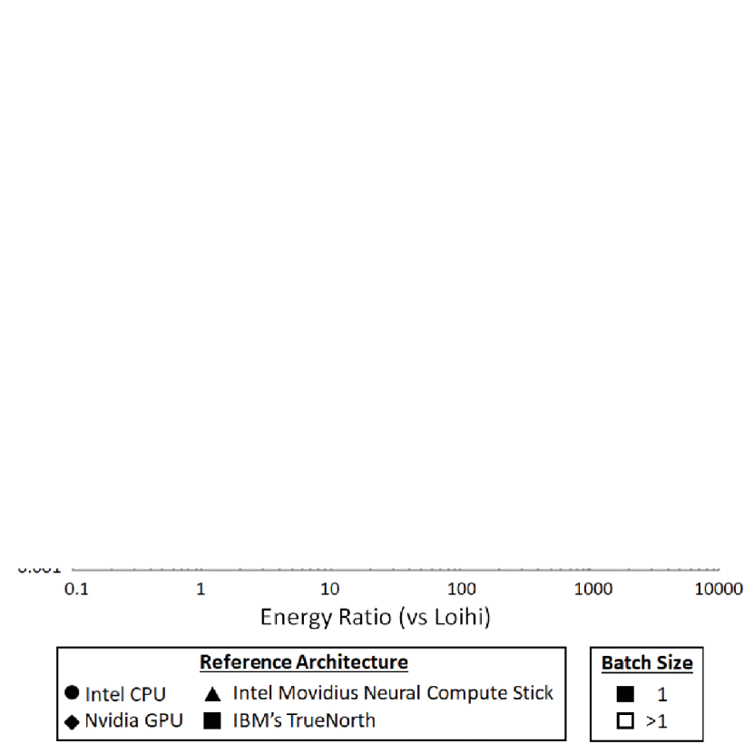

The Most Comprehensive Introduction to Spiking Neural Networks for Deep Learners
Sami BARCHID

Context
Deep learning
- State-of-the-art in almost all Computer Vision and Machine Learning tasks
- Growing computational, memory and energy costs

Spiking Neural Networks (SNNs)
- Third-generation of AI [Maass1997]
- Spiking neurons: strongly inspired by the neurons of our brain
- Implementable on low-power neuromorphic hardware [Davies2018]
- A potential solution
Objectives of this tutorial
- Give the tools to understand SNNs for Computer Vision (CV) adepts
- Introduction of how to work with SNNs on CV to produce state-of-the-art works
- Discussion about the current research interests in the CV community
Summary
- What is a Spiking Neuron ?
- How to train an SNN ?
- How to run an SNN ?
- Discussions
What is a Spiking Neuron ?
Biological Neurons
- Communicate with short impulses called spikes
- Various computational models from neuroscience
Leaky Integrate-and-Fire neuron
Leaky Integrate-and-Fire neuron
Leaky Integrate-and-Fire neuron
Leaky Integrate-and-Fire neuron
Leaky Integrate-and-Fire neuron
Leaky Integrate-and-Fire neuron
Leaky Integrate-and-Fire neuron
Leaky Integrate-and-Fire neuron
Animation
https://www.youtube.com/watch?v=kPCZESVfHoQ4 concepts
- Integrate input spikes weighted by synapses
- Membrane potential that leaks over time
- Emit a spike when a threshold is exceeded
- Reset the membrane potential after a spike
Mathematically
Mathematically
Mathematically
Mathematically

Mathematically
Mathematically
Mathematically
Mathematically

Mathematically
The relationship between $S$ and $U$ is the Heaviside step function
$S[t] = \Theta (U[t] - \theta)$
Code
Code
Code
Code
Code
Code
Code
Code
Code
Code
How to use it?
What we know
- A spiking neuron has an internal state (i.e. membrane potential)...
- that evolves in time to create a certain output (i.e. the spike)
SNNs are Recurrent Neural Networks
Computational Graph
How to train an SNN ?
Learning Approaches
- Unsupervised local learning [Caporale2008]
- Neuromorphic implementation
- No annotation
- ANN-to-SNN conversion [Cao2015]
- Best performance
- Training is still on ANNs
- Adapted Backpropagation [Kaiser2020]
- Good performance recently
Backpropagation with SNNs
- Same as RNNs: BackProp through time (BPTT)
Spikes are not differentiable
Spikes are not differentiable
Spikes are not differentiable
Spikes are not differentiable
Spikes are not differentiable
Surrogate Gradient
Surrogate Gradient
Code
Code
Surrogate Gradient Descent
- Can train deep SNNs
- Can deal with more complex tasks recently
- Localization [Barchid2021]
- Semantic Segmentation [Youngeun2021]
- Classification on ImageNet [Fang2021]
How to run an SNN
Methods
- Easy way: Simulation on CPU/GPU
- Hard way: Neuromorphic Hardware
Simulation
- Pros:
- Hardware easily available
- Easy to implement and test ANY algorithm
- Cons:
- Inefficient
- Abreviation of the real performance on Neuromorphic Hardware
- Neuromorphic hardware limitations bypassed
Simulation
- PyTorch: (mainly Surrogate Gradient)
snntorchspikingjelly- ...
- Specialized
Neuromorphic Hardware
- Pros:
- Efficient
- Valuable measures on Neuromorphic Hardware
- Neuromorphic hardware limitations
- Cons:
- No commercialization
- Immature (but...)
- Neuromorphic hardware limitations
Neuromorphic Hardware
- Spinnaker
- IBM TrueNorth
- Intel Loihi
Discussions
Intel Loihi
- Accessible through partnership
- Ready for computer vision and more
- Bridges the gap between simulation and neuromorphic hardware (Lava Framework)
- Shows the promises of neuromorphic hardware
Energy Efficiency
Energy Efficiency
Energy Efficiency
Energy Efficiency
Energy Efficiency
Research Interests
- Event-based cameras
- Surrogate Gradient Descent
- Embedded Vision (e.g. robotics)